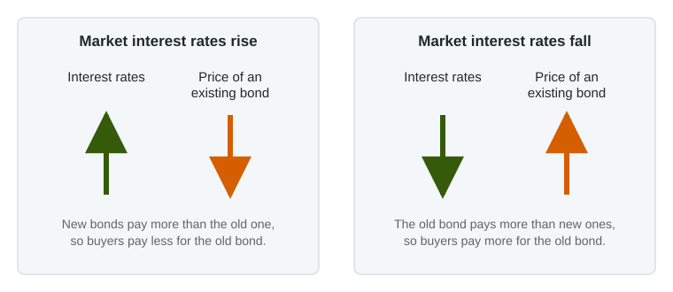

Unit 4 is about the financial sector: the banks, markets and assets that move saving to borrowers. Before money and banks, you need the things people hold their wealth in, and one rule that drives much of the unit: when interest rates rise, the prices of existing bonds fall.
What a financial asset is
An asset is anything of value that someone owns. A delivery truck or a house is a physical asset: you can use it. A financial asset is a claim on money or on future income. The three you need for the exam are money, bonds and stocks.
- Money: currency and bank deposits you can spend right away.
- Bonds: a bond is a loan. A government or a firm borrows from the buyer and promises fixed interest payments each year and repayment of the amount borrowed (the face value) on a set date.
- Stocks: a share of stock is part ownership of a corporation. Stockholders may receive dividends from profits, and the share's price rises and falls with the firm's prospects. Nothing is promised.
| Bond | Stock | |
|---|---|---|
| What you hold | A loan to the issuer (debt) | Part ownership of the firm (equity) |
| What you are paid | Fixed interest, then the face value back | Dividends, if the firm pays any, and any rise in price |
| Risk | Lower: bondholders are paid before owners | Higher: owners are paid last and the price swings |
Liquidity, risk and return
Liquidity is how easily an asset can be turned into money without losing value. Money is perfectly liquid. A savings deposit is nearly as liquid. A bond or a stock must be sold first, at whatever price buyers offer that day, and a house can take months to sell. Assets trade off liquidity, risk and return: to get people to hold a less liquid or riskier asset, it has to offer a higher expected return. That is why money in a checking account pays almost nothing and stocks, over long periods, have paid more, with large swings along the way.
The interest rate: the price of borrowing
An interest rate is what a borrower pays each year for the use of money, as a percent of the amount borrowed. At 6%, borrowing $100 for a year costs $6. For the lender, the same 6% is the reward for giving up the use of the money. When this unit says "the interest rate", it means the general level of rates on loans and bonds, which tend to rise and fall together.
Why bond prices and interest rates move in opposite directions

A bond's payment is fixed when it is issued. Its price is not. Anyone who wants to sell an old bond has to compete with new bonds that pay today's market rate.
Worked example: the yield on a bond. A bond with a face value of $1,000 pays $50 a year. Find the interest rate a buyer earns at three prices.
- The rate on what you pay is the yearly payment divided by the price, times 100.
- At $1,000: .
- At $625: . If new bonds pay 8%, a buyer will pay about $625 and no more for this one.
- At $1,250: . If new bonds pay 4%, buyers will bid this bond up toward $1,250.
The method: the payment is stuck, so the price is what moves to make the old bond pay the market rate. Rates up, price down; rates down, price up. (Real bonds repay their face value on a set date, so their prices move by less than this simple calculation, but they move the same way.)
A common slip is to say a rise in interest rates makes existing bonds worth more "because bonds pay interest." The new bonds pay more; the old ones keep their old payment, so their prices fall.
This link runs both ways, and later topics use it constantly. When something makes people want to buy bonds, bond prices rise and interest rates fall. When people sell bonds to get money, bond prices fall and interest rates rise.
For your exam
- Say the direction for both: "the interest rate rises, so the price of existing bonds falls."
- A bond is a loan (debt); a stock is ownership (equity).
- Liquidity means turning an asset into money at full value. Money is the most liquid asset and pays the least.